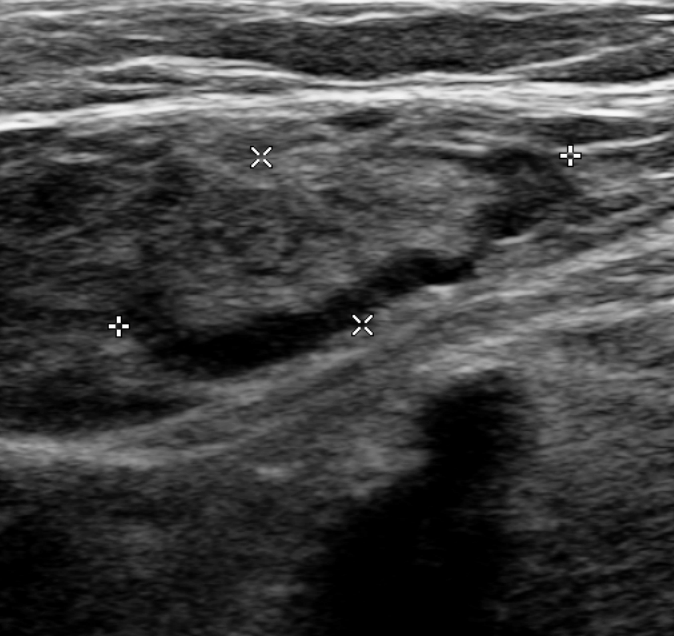

Ficha del catálogo
Trombosis venosa profunda
- Sistema
- Cardiovascular
- Modalidad
- US
- Región
- Miembros inferiores
- Dificultad
- Básico
Es la formación de un trombo dentro del sistema venoso profundo, con predominio en las venas de los miembros inferiores. Se favorece por estasis, lesión endotelial e hipercoagulabilidad, y se sospecha ante dolor, edema asimétrico y aumento de temperatura de la extremidad. Su principal riesgo es la embolia pulmonar.
Técnica
El ultrasonido con compresión es la técnica de referencia: Se aplica presión con el transductor en plano transverso cada uno o dos centímetros a lo largo del trayecto venoso. Se complementa con Doppler color y espectral para valorar el flujo, la fasicidad respiratoria y la respuesta a la compresión distal. Se explora desde la vena femoral común hasta las venas de la pantorrilla.
Qué observar
- Ausencia de compresibilidad completa de la luz venosa
- Material ecogénico intraluminal y distensión de la vena
- Ausencia o defecto de llenado en el Doppler color
- Pérdida de la fasicidad respiratoria y de la respuesta al aumento distal
- Extensión proximal del trombo y presencia de extremo flotante
- Signos indirectos: Edema del tejido celular subcutáneo, quiste poplíteo
Hallazgos
La vena trombosada no colapsa al comprimirla, aparece dilatada y con contenido ecogénico de ecogenicidad variable según la antigüedad. El Doppler color muestra ausencia de relleno o flujo periférico alrededor del trombo. En la trombosis crónica la vena es pequeña, de paredes engrosadas, con material ecogénico retráctil y circulación colateral.
Perlas
La compresión debe realizarse siempre en el plano transverso, porque en el plano longitudinal el vaso escapa lateralmente del campo y una vena permeable puede parecer incompresible, generando un falso positivo con consecuencias terapéuticas importantes.
Diagnóstico diferencial
- Quiste de Baker roto
- Se identifica una colección con cuello entre el gastrocnemio medial y el semimembranoso, con venas compresibles.
- Celulitis
- Hay engrosamiento y aumento de ecogenicidad del tejido subcutáneo con eje venoso normal y compresible.
- Trombosis venosa superficial
- El trombo se localiza por fuera de la fascia muscular, en el sistema safeno, y no compromete el eje profundo.
- Linfedema
- El edema es crónico, con piel engrosada y patrón en empedrado, sin hallazgos intravasculares.
Simuladores
- Compresión insuficiente por dolor o por obesidad del paciente
- Flujo lento con contraste espontáneo que simula trombo
- Ganglio o quiste adyacente confundido con vena distendida
Por modalidad
- TC
- La venografía por tomografía valora los ejes iliacos y la vena cava, poco accesibles al ultrasonido.
- US
- Es el método inicial por su disponibilidad, ausencia de radiación y alta exactitud en el segmento femoropoplíteo.
Protocolo
Transductor lineal de alta frecuencia para los segmentos superficiales y convexo para los profundos u obesidad. Se explora en plano transverso con compresión seriada desde la ingle hasta la pantorrilla y se documenta con Doppler color y espectral en los puntos clave. Se registran imágenes con y sin compresión de cada segmento.
Clasificación
Se distingue la trombosis proximal, que compromete la vena poplítea o segmentos más craneales y tiene mayor riesgo embólico, de la distal limitada a las venas de la pantorrilla. También se diferencia entre trombosis aguda, subaguda y crónica según los hallazgos ecográficos y la clínica.
Errores frecuentes
- Comprimir en plano longitudinal y generar un falso positivo
- No explorar las venas iliacas ni la femoral profunda
- Interpretar un trombo crónico residual como episodio agudo

trombosis venosa Doppler compresión miembro inferior embolia pulmonar ultrasonido vena femoral